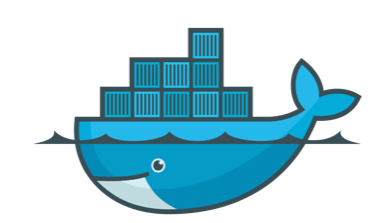
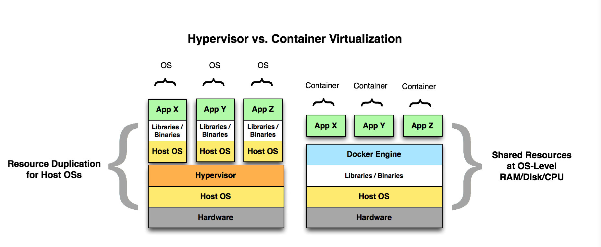
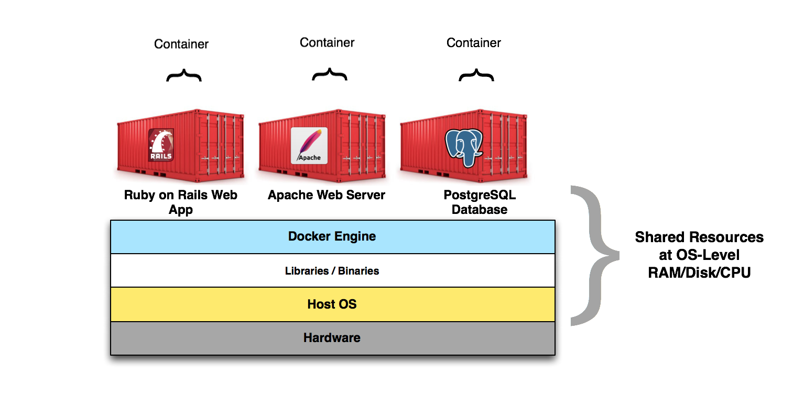
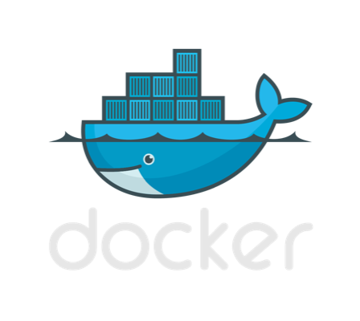
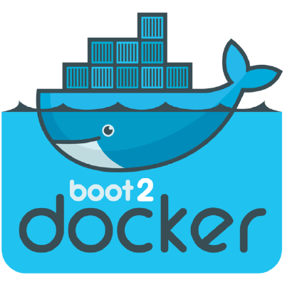

class: center, middle, inverse <p>  </p> # Getting Started with Docker .pinkify[(aka Container Virtualization)] Walter Meyer SUNY Purchase --- # Agenda - What is Container Virtualization? - What is Docker? --- # What is Container Virtualization? <p>  </p> --- # The container metaphor... - How do we get all of our stuff in real life? - It gets packed into a standard shipping container and put on a big boat! <p> </p> --- # The container metaphor... - Application deployment can be as complex and varied as the products we get via shipping containers. - Let's say you have a Ruby on Rails, Java, or Node.js Web application. It requires X version of Ruby, Java, or some strange Ruby Gem that requires yet another strange library on the OS. - Oh, and the developer says it only works on Ubunut 14.04 but you run CentOS... - With Docker, all of this is no problem! <p> </p> --- # The container metaphor... - We can "container-ize" our applications and all of their dependencies easily with Docker. - So, we "ship" our application in a Docker Container format, ready to rock. No complex installation guide necessary. <p>  </p> --- --- # What is Docker? - Docker is an implementation of container virtualization. - It is a suite of server and client tools. - Uses built-in Linux Kernel (3.10+) features (namespaces and cgroups). - Namely, namespaces and cgroups. <p>  </p> --- # What is Docker? - Docker Client - Docker Daemon - Docker Hub - <p> </p> --- # Under the Linux Container Hood - namespaces and cgroups are features of the linux kernel that are used by Docker to give us Container Virtualization. - namespaces - Process-based isolation of system resources. A PID in a given namespace *thinks* it is by itself with respect to other PIDs, network resources, mount points, etc. - cgroups (aka control groups) --- class: inverse, footnote # You can try it on your laptop, right now! For CLI ♥ ers (OS X, Linux, or Windows): http://boot2docker.io <p>  </p> For GUI ♥ ers (OS X only): http://kitematic.com <p> </p> .pinkify[P.S. I won't be offended if you ignore me and play with Docker now...] --- Code: Start an Ubuntu container: ```shell bash-3.2$ docker run -it ubuntu bash ``` See what containers are running: ```shell bash-3.2$ docker ps CONTAINER ID IMAGE COMMAND CREATED STATUS PORTS NAMES 535b105d1ee2 ubuntu:latest "bash" 25 seconds ago Up 23 seconds hopeful_carson ``` See what "images" we have: ```shell bash-3.2$ docker images REPOSITORY TAG IMAGE ID CREATED VIRTUAL SIZE ubuntu latest 07f8e8c5e660 2 weeks ago 188.3 MB hello-world latest 91c95931e552 4 weeks ago 910 B ``` --- - How long does it take to start and stop a container? - About 50 milliseconds! - How long does it take to start and stop a traditional VM? - About 25-45 seconds